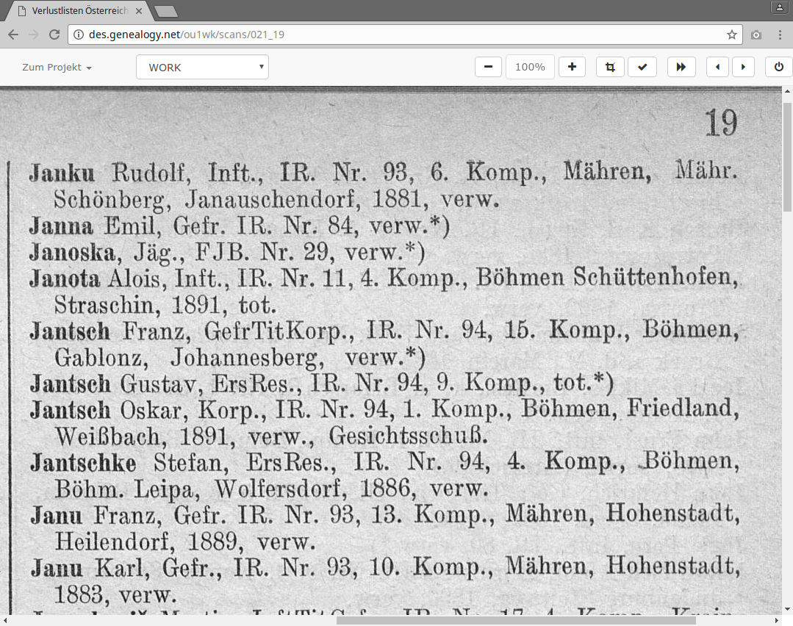

Austrian-Hungarian Casualty Lists in DES
Your first three entries
Jesper Zedlitz (CompGen)
After navigating to
http://des.genealogy.net/wk1ou/start/edit
and logging in you will see a screen similar to this one….

The scan appears. We position the mouse pointer in the upper left corner of the first entry…

and click boldly with the left mouse button.

The input mask opens up.
Don't worry, if it looks a bit confusing on first sight. We work out bit by bit.

We start typing, first the surname. All characters can be entered lower case, the program will automatically take care of the case.

Use the Tab key to move to the next field and enter the first name. Now we enter the rank ("Dienstgrad"). To do this, press the Tab key 3 times and you land in the blue field.

Press the 'I' key and "Infanterist" is entered. "IR" denotes the unit ("Truppenkörper"). Pressing the Tab key 4 times takes us to the yellow input field.

Again, one 'I' key is enough. In this way, we gradually work through all input fields. Now click on "Speichern" (save) or press Tab and Enter after the status field.
Congratulation, the first record is saved!
The green bar indicates that this entry has been entered.
The second and third entry
After this success we want to continue with the second and third entry.
We will also be familiar with a convenience function and a key combination of the DES.

Now comes the second entry. Again, click on the upper left corner of the entry.

The input mask opens again. Since our last entry was a double line, the here the capture window somewhat too far down. That does not matter.

We fill the entry as usual. Before saving, however, we wait briefly...

... and toggle the checkbox infront of "verwundet" ("wounded"). This is a convenience function of the DES. It ensures that the value "verwundet" is noted for the next entry. Now we can save.

Here is the input mask for the third entry. As promised the status "verwundet" was noted.

We enter the (few) data of the third entry. "FJ" is already sufficient for the unit. After entering 29 we can press Alt+s to save the entry. A click on "Speichern" is also possible.

And the third entry is already finished!
That was not so hard, right?
Have fun with the further editing.
If you have questions the project supervisors will be glad to help. There is also a mailing list where you can ask questions: